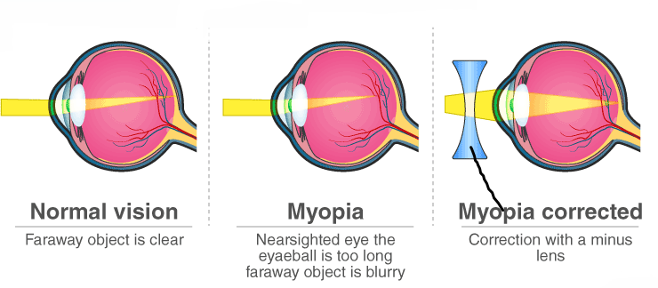

HUMAN EYE AND THE COLOURFUL WORLD
The Human Eye: It is a natural optical instrument which is used to see the objects by human beings. It is like a camera which has a lens and screen system.
The human eye is roughly spherical in shape with a diameter of about 2.3 cm. It consists of a convex lens made up of living tissues. Hence, human lenses are living organs contrary to the simple optical lenses.
/GettyImages-695204442-b9320f82932c49bcac765167b95f4af6.jpg)
Parts of Human Eye
- Retina: It is a light sensitive screen inside the eye on which image is formed. It contains rods and cones.
- Cornea: It is a thin membrane which covers the eye trail. It acts like a lens which refracts the light entering the eye.
- Aqueous humour: It is fluid which fills the space between cornea and eye lens.
- Eye lens: It is a convex lens made of transparent and flexible jelly like material. Its curvature can be adjusted with the help of ciliary muscles.
- Pupil: It is a hole in the middle of iris through which light enters the eye. It appears black because light falling on it goes into the eye and does not come back.
- Ciliary muscles: These are the muscles which are attached to eye lens and can modify the shape of eye lens which leads to the variation in focal lengths.
- Iris: It controls the amount of light entering the eye by changing the size of the pupil.
- Optical nerve: These are the nerves which take the image to the brain in the form of electrical signals.
| S.No. | Human Eye Part | Functions |
| 1. | Pupil | Opens and closes in order to regulate and control the amount of light. |
| 2. | Iris | Controls light level similar to the aperture of a camera. |
| 3. | Sclera | Protects the outer coat. |
| 4. | Cornea | A thin membrane which provides 67% of the eye’s focusing power. |
| 5. | Crystalline lens | Helps to focus light into the retina. |
| 6. | Conjunctive | Covers the outer surface (visible part) of the eye. |
| 7. | Aqueous humour | Provides power to the cornea. |
| 8. | Vitreous humour | Provides the eye with its form and shape. |
| 9. | Retina | Captures the light rays focussed by the lens and sends impulses to the brain via the optic nerve. |
| 10. | Optic nerve | Transmits electrical signals to the brain. |
| 11. | Ciliary muscles | Contracts and extends in order to change the lens shape for focusing. |
Power of Accomodation
The ability of eye to change the focal length of eye lens with the help of ciliary muscles to get the clear view of nearby objects (about 25 cm) and far distant objects (at infinity).
- Focal length increases when Ciliary muscles get relaxed and lens get thin.
- Focal length decreases when Ciliary muscles get contrcted and lens get thick.
Persistence of Vision
It is the time for which the sensation of an object continue in the eye. It is about 1/16th of a second.
How does Pupil work?
(a) When the light is bright: Iris contracts the pupil, so that less light enters the eye.
(b) When the light is dim: Iris expands the pupil, so that more light enters the eye.
Pupil opens completely when iris is relaxed.
Defects of Vision and their Correction
Myopia (Short-sightedness)
- It is a kind of defect in the human eye due to which a person can see near objects clearly but he cannot see the distant objects clearly.
- Image is formed in front of the retina.
Causes of myopia
- Excessive curvature of the cornea.
- Elongation of eyeball.
Correction of Myopia
- It is done by using concave lens of appopriate power.

Hypermetropia (Long-sightedness)
- It is a kind of defect in the human eye due to which, a person can see distant objects properly but cannot see the nearby objects clearly.
- Near point of the eye moves away
- Image is formed behind the retina.
Causes of hypermetropia
- Decrease in the power of eye lens i.e., increase in focal length of eye lens.
- Shortening of eyeball.
Correction of Hypermetropia
- It can be done by using convex lens of suitable power.

Presbyopia
Causes of Presbyopia
Correction of Presbyopia
- It can be done by the use spectacles containing bio-focal lens.
Refraction of light through a prism
When a ray of light is incident on a rectangular glass slab, after refracting through the slab, it gets displaced laterally. As a result, the emergent ray comes out parallel to the incident ray.
Unlike a rectangular slab, the side of a glass prism are inclined at an angle called the angle of prism.
Prism: A pyramidal piece of glass with two triangular bases and three rectangular lateral surfaces.
Angle of Prism: Angle between two adjoining lateral surfaces.
Angle of Deviation: The angle between the incident ray and the emergent ray.

Dispersion of white light by glass prism
- Sunlight or White Light is made of 7 colors as in VIBGYOR (Violet, Indigo, Blue, Green, Yellow, Orange, Red). When white light is passed through a prism, we can see it split into the components that it is made of. This is called the Spectrum.
- Violet bends the most and Red bends the least

Rainbow Formation
- Rainbow: It is the spectrum of sunlight in nature. It is formed due to the dispersion of sunlight by the tiny water droplet, present in the atmosphere.
- Three phenomenon are involved in the formation of rainbow:
- Dispersion
- Refraction
- Internal Reflection
- Some water droplets remain suspended in air after rain. These droplets behave as glass prism.
- When light enters the rain drop, it first refracts and disperses.
- Then it reflects internally and again refracts as it comes out of drop and the seven colors reach the eye of the observer in the form of rainbow.

Atmospheric Refraction
The refraction of light caused by the Earth’s atmosphere (having air layers of varying optical densities) is called Atmospheric Refraction.
Appearance of Star Position
It is due to atmospheric refraction of star light.
The temperature and density of different layer of atmosphere keeps varying. Hence, we have different medium.
Distant star act as point source of light. When the starlight enter the Earth’s atmosphere, it undergoes refraction continuously, due to changing refractive index i.e. from Rarer to denser. It bends towards the normal.
Due to this, the apparent position of the star is different from actual position. The star appear higher than its actual position.

Twinkling of Star
It is also due to atmospheric refraction.
Distant star act like a point source of light. As the beam of starlight keeps deviating from its path, the apparent position of star keeps on changing because physical condition of earth’s atmosphere is not stationary.
Hence, the amount of light enters our eyes fluctuate sometimes bright and sometime dim. This is the “Twinkling effect of star”.


Advanced Sunrise
- The sun appears about two minutes earlier than the actual sunrise and the sun remains visible for about two after actual sunset.
- When the sun is below horizon, the rays have to pass from rarer to denser medium.
- So rays bend towards normal. As a result the sun appears higher than its actual position.